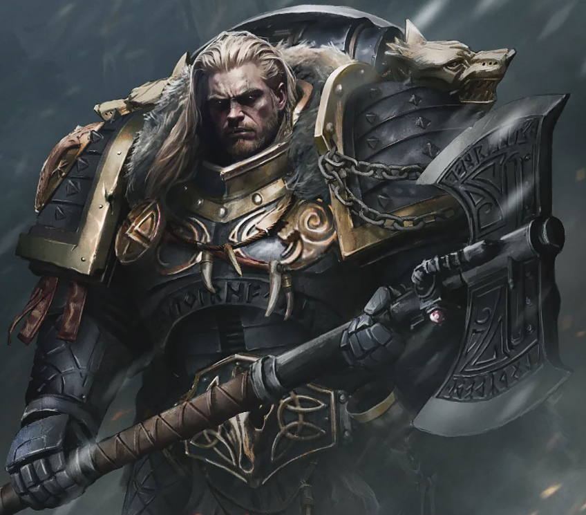

Dossier Primarque VIe Légion
Leman Russ fut le Primarque des Space Wolves. Roi de Fenris, seigneur des meutes, exécuteur de l’Empereur.
Retrouvé sur un monde de glace et de prédateurs, il grandit dans une culture où la force, l’honneur et la survie formaient une seule loi.

LE FILS DE L’EMPEREUR
Sous son commandement, la VIe Légion devint une force de chasse et de punition. Les Space Wolves n’étaient pas envoyés seulement pour vaincre. Ils étaient envoyés pour traquer, briser et rappeler aux ennemis de l’Empereur que certaines fautes appellent une réponse sans pitié.
Russ n’était pas un simple barbare, malgré ce que ses ennemis aimaient croire. Derrière les chants, les crocs et les peaux de bête se trouvait un esprit tactique brutalement lucide.
Durant la Grande Croisade, il servit comme arme de sanction. Lorsque la loyauté devait être imposée, lorsque la déviance devait être écrasée, la meute était lâchée.
L’Hérésie d’Horus révéla toute la violence de son rôle. Russ fut impliqué dans la destruction de Prospero, affrontant Magnus le Rouge et les Thousand Sons dans une guerre dont les conséquences résonnent encore.
LA GUERRE COMME DESTIN
Ce conflit reste une plaie dans les archives impériales. Ordres altérés, manipulations, loyauté exploitée. Les loups furent lâchés, et un monde de savoir fut réduit en cendres.
Après l’Hérésie, Leman Russ disparut. Les sagas de Fenris affirment qu’il reviendra lorsque l’heure sera la plus noire. Les archives, elles, ne confirment rien.
Il faut comprendre ceci. Leman Russ n’était pas seulement un guerrier sauvage. Il était la lame que l’Empereur réservait aux siens lorsque les siens devenaient dangereux.
Et une telle lame ne disparaît jamais vraiment.
L’HÉRITAGE IMPÉRIAL
Fin de l’extrait. Toute mention du retour de Leman Russ relève des traditions fenrissiennes et doit être classée comme prophétie non vérifiée.